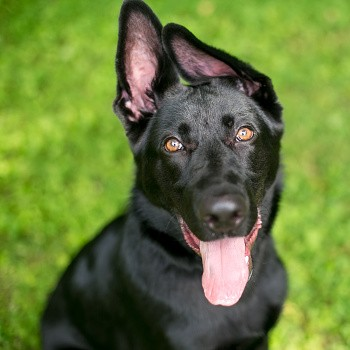

Conheça o Bidu
O Bidu é um cãozinho extremamente calmo, equilibrado e carinhoso, perfeito para quem busca tranquilidade. Ele se adapta muito bem a rotinas caseiras, adora receber cafuné deitado no sofá e é excelente para famílias que apreciam um companheiro mais sossegado e maduro.

A história do Bidu
O Bidu foi acolhido após ser deixado em frente a uma clínica veterinária. Apesar de ter enfrentado o abandono na fase adulta, ele nunca perdeu sua doçura e paciência incomparáveis. No abrigo, ele é conhecido por acalmar os outros cães e por sua postura sempre educada. Ele já está saudável, vacinado, castrado e pronto para trazer paz a um novo lar.
Traços do Bidu
Cuidados e saúde
| Vermífugo | Em dia |
|---|---|
| Vacinas | V10 e Raiva em dia |
| Castrado | Sim |
| Microchip | Sim |
| Saúde geral | Saudável |
| Alimentação | Ração de qualidade |
| Alergias | Nenhuma conhecida |
| Última consulta | Maio/2026 |
Como funciona a adoção
1 Conheça
Explore o perfil e se encante pelo animal.
2 Converse
Fale com nossa equipe e tire suas dúvidas.
3 Visita
Agende uma visita para conhecer o animal.
4 Adoção
Assine o termo e leve amor para casa.